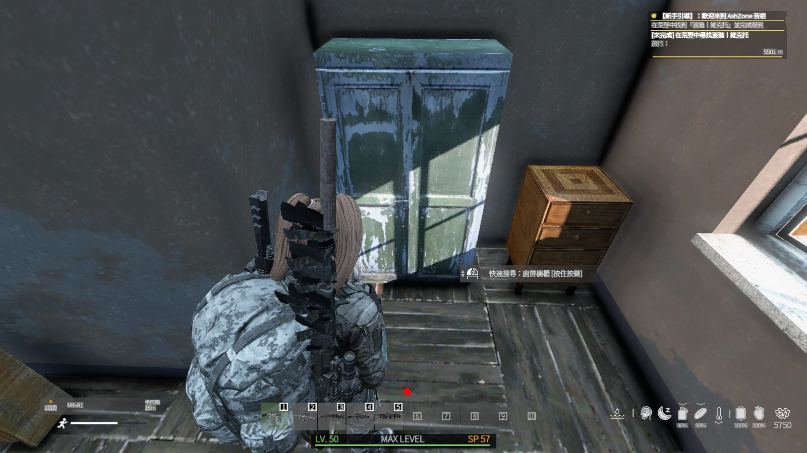
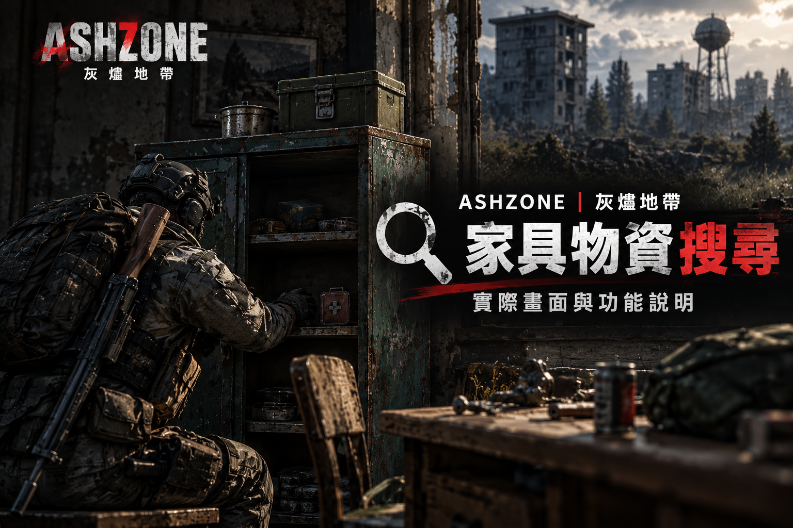
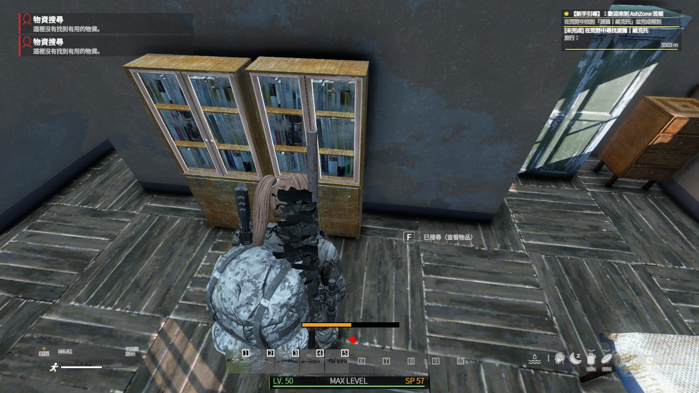

STEP 1
靠近家具並開始搜尋
靠近可互動家具後，畫面會出現搜尋操作提示。你目前的模組有不同搜尋方式，例如 快速搜尋 與 仔細搜尋；部分物件或木箱則可能需要透過 強行開啟 來處理。
這套系統可以讓玩家對可互動家具進行搜尋，從中取得物資；但搜尋時會累積噪音，數值過高可能引來感染者。以下內容依你目前提供的 AZ_FurnitureSearch 模組設定與遊戲實拍畫面整理，方便玩家在官網直接查看。

用你提供的原始遊戲截圖，對應玩家實際會看到的三個階段：開始搜尋、搜尋進行中、完成後的結果與通知。

靠近可互動家具後，畫面會出現搜尋操作提示。你目前的模組有不同搜尋方式，例如 快速搜尋 與 仔細搜尋；部分物件或木箱則可能需要透過 強行開啟 來處理。
搜尋時下方會顯示 搜尋噪音量表。不同搜尋方式帶來的噪音不同，數值越高，就越有機會吸引附近感染者。若連續搜尋多個家具，噪音會繼續往上堆疊。

搜尋完成後，系統會以通知方式回饋結果，例如有沒有找到物資、是否發生意外噪音事件、甚至是否引來感染者。若家具已被搜過，會顯示 已搜尋（查看物品）。
噪音條是這套系統最重要的風險資訊。依照 PBO 設定，噪音條會自己慢慢下降，但短時間內連續搜尋仍然很容易推高到危險區間。
下方進度條代表你目前累積的搜尋噪音量。數值越高，越容易吸引附近感染者前來調查；若噪音滿值，風險會明顯升高。建議玩家在搜尋幾個家具後先觀察狀況，不要一路無腦連搜。
噪音偏低，感染者不容易察覺。適合在安全狀態下持續搜尋。
噪音已提升，開始有機會吸引附近感染者，建議提高警覺。
噪音非常大，極易引來感染者。若周圍狀況不明，建議立刻停止搜尋並移動。
以下訊息是依照模組字串與實際功能整理，玩家在遊戲中看到時可以立即理解代表什麼意思。
這裡直接把目前模組設定整理成玩家最好懂的表格。若你未來調整 PBO 內設定值，只要改這個表格數字即可同步教學內容。
| 搜尋方式 | 時間 | 噪音量表增加 | 特點 |
|---|---|---|---|
| 快速搜尋 | 3 秒 | +25% | 速度快，但噪音偏大；適合想快速摸幾個家具就走的玩家。 |
| 仔細搜尋 | 10 秒 | +15% | 速度較慢，噪音較小，且搜尋品質較穩定；適合相對安全的環境。 |
| 強行開啟 | 8 秒 | +50% | 適用部分可強開物件／木箱，需要對應工具，噪音非常大，風險最高。 |
※ 上述數值依目前提供的 AZ_FurnitureSearch 模組設定整理：Quick = 25、Thorough = 15、Force = 50。若日後你調整 Settings，網站說明也建議同步修改。
把這些觀念教給玩家，比單純告訴他們「可以搜櫃子」更重要。
這一頁已經直接用你提供的三張原始截圖作為主畫面素材，並把模組內實際功能、通知與設定數值整合成教學頁。你之後可以把這頁掛在 教學中心，或直接當作新手指南中的進階系統說明。